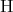
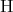

4.8 Convexity of a NC function
This chapter describes commands which do two things. One is compute the ”region” on which a
noncommutative function is matrix convex. The other is take a noncommutative quadratic
function variables H1,H2, etc and give a Gram representation for it, that is, represent it
as
![T
V [H] M V [H]](NCBIGDOC29x.png) a
”vector” with the Hj entering linearly and M a matrix. Other commands are described here but
they are subservient to NCConvexityRegion[afunction,alist,options] and would not be used
independently of it. The commands in this chapter are not listed alphabetically but are listed in
the presumed order of importance.
a
”vector” with the Hj entering linearly and M a matrix. Other commands are described here but
they are subservient to NCConvexityRegion[afunction,alist,options] and would not be used
independently of it. The commands in this chapter are not listed alphabetically but are listed in
the presumed order of importance.
4.8.1 NCConvexityRegion[afunction,alistOfVars,opts]
-
- Aliases: None.
-
- Description: NCConvexityRegion[afunction,alistOfVars,opts] computes the ”region” on
which afunction is matrix convex with respect to alistOfVars. It performs three main
operations. First it computes the Hessian with respect to alistOfVars (see NCHessian).
Then, using NCMatrixOfQuadratic, the Hessian is factored into the form vtMv.
Finally, depending on the option AllPermutation, either NCAllPermutationLDU
or NCLDUDecomposition is called to compute the LDU factorization of M, the
default being AllPermutation → NCLDUDecomposition. If D ends up being diagonal,
then a list of the diagonal elements of D is returned. If D ends up being
block diagonal with 2 × 2 blocks, then a message is printed out and the list:
{{diagonalentries},{subdiagonalentries},{-subdiagonalentries}} is returned. The
region of convexity of afunction with respect to alistOfVars equals the closure, in
a certain sense, of the set of matrices which makes all diagonal entries positive.
If there are non-zero subdiagonal entries, then afunction is typically not matrix
convex on any open set. Options permit the user to select a range of different
permutation matrices, thereby producing several possibly distinct diagonal matrices
D.
EXAMPLE: NCConvexityRegion[x **y + y **x,{x,y}] gives:
L**D**tp[L] gave non-trivial blocks, so the output list is:
{{diagonal},{subdiagonal},{-subdiagonal}}
{{{0, 0},{2},{-2}}}
While, NCConvexityRegion[x **y + y **x,{x,y},AllPermutation → True] gives:
Middle matrix is size 2 X 2
At most 2 permutations possible.
{1}
L**D**tp[L] gave non-trivial blocks, so the output list is:
{{diagonal},{subdiagonal},{-subdiagonal}}
{{{0, 0},{2},{-2}}}
In both cases, NCHessian[x **y + y **x,{x,h},{y,k}] gives
2h **k + 2k **h,
NCMatrixOfQuadratic[2h **k + 2k **h,{h,k}] gives
{{{h,k}},{{0, 2},{2, 0}},{{h},{k}}},
and depending on if AllPermutation is set to True or False you have that either
NCLDUDecomposition[{{0, 2},{2, 0}}] gives
{{{1, 0},{0, 1}},{{0, 2},{2, 0}},{{1, 0},{0, 1}},{{1, 0},{0, 1}}}
or NCAllPermutationLDU[{{0, 2},{2, 0}}] gives
{{{{1, 0},{0, 1}},{{0, 2},{2, 0}},{{1, 0},{0, 1}},{{1, 0},{0, 1}}},
{{{1, 0},{0, 1}},{{0, 2},{2, 0}},{{1, 0},{0, 1}},{{1, 0},{0, 1}}}}
-
- Arguments: afunction is a function whose variables are listed in alistOfV ars, where
alistOfV ars should be of the form {x1,x2,…,xn}.
The default options for NCConvexityRegion are:
NCSimplifyDiagonal →False
DiagonalSelection → False
ReturnPermutation → False
ReturnBorderVector → False
AllPermutation → False
NCSimplifyDiagonal is an option geared toward a similar option used in
NCLDUDecomposition. This will make sure that the pivots (or diagonal entries) are
all first simplified with NCSimplifyRational before they are used to check that the
pivots are all nonzero. Simplifying the pivots using NCSimplifyRational can be quite
time consuming, so by default we commute everything and then use Mathematica
simplification commmands. We do this only to convince ourselves that the pivot is
nonzero. If all the pivots are zero using CommuteEverything we then revert to using
NCSimplifyRational to verify our suspicions. Setting NCSimplifyDiagonal → True
will bypass the commute everything step. (Note: Either way, the unsimplified form of
the pivot is returned unless it is equal to zero.)
The option AllPermutation tells NCConvexityRegion which of
NCLDUDecomposition or NCAllPermutationLDU to use. Setting AllPermutation to
True will use
NCAllPermutationLDU,while False uses NCLDUDecomposition. The default value is
AllPermutation → False. The following pertains to the case where AllPermutation
is set to True. If you decide to do this, then you should also set DiagonalSelection
to the permutations you would like NCAllPermutationLDU to use. Since different
permutations return different diagonals, some diagonals are simpler to work with than
others. On the other hand, if AllPermutation is set to False, which it defaults to,
then NCConvexityRegion calls NCLDUDecomposition and what follows does not apply
as no permutations are used. Different permutations return different diagonals. Some
diagonals are simpler to work with than others. Because of this, we allow the user to
select a sampling of different permutations. The total number of permutations will not
be known until M is computed. After M is computed, the total number of possible
permutations will be printed on the screen. DiagonalSelection → {n} returns the
diagonals resulting from the first n permutations. DiagonalSelection→{k,n} returns
the diagonals resulting from the kth through nth permutations. Since the total number
of permutations is assumed to be unknown by the user, if n is too high, then n is
replaced by the total number of permutations. Also, not all of the permutations are
permissible. Because of this, NCLDUDecomposition automatically pivots if an invalid
permutation is used for a particular step. This means it is possible that not all the
diagonals returned result from different permutations. For this reason there is the
option ReturnPermutation which if entered as True returns the permutations used
for each resulting factorization. Finally, the user may wish to analyze the border
vectors and may do so by setting ReturnBorderVector to True. This will cause
NCConvexityRegion to return the border vectors v from the vtMv factorization of the
hessian. Now vt will have the form
 So what will actually be returned is a list of the form
So what will actually be returned is a list of the form
 This vector will be formed using a call to NCBorderVectorGather. Also, a call will be
made to NCIndependenceCheck to determine, if possible, whether or not the elements
of the above list are independent. The results of this check will be printed to the screen.
This vector will be formed using a call to NCBorderVectorGather. Also, a call will be
made to NCIndependenceCheck to determine, if possible, whether or not the elements
of the above list are independent. The results of this check will be printed to the screen.
-
- Comments / Limitations: None.
4.8.2 NCMatrixOfQuadratic[  , {H1,…,Hn} ]
, {H1,…,Hn} ]
-
- Aliases: None.
-
- Description: NCMatrixOfQuadratic[ , {H1,H2,…,Hn} ] gives
a vector matrix factorization of a symmetric quadratic function in noncommutative
variables
 = {H1,H2,…,Hn} and their transposes.
= {H1,H2,…,Hn} and their transposes.
NCMatrixOfQuadratic[ , {H1,H2,…,Hn} ], generates the list {left border
vector, coefficient matrix, right border vector}. That is, Q is factored into
the vector-matrix-vector product V [ ]T M
Q V[].ThevectorV[
]T M
Q V[].ThevectorV[ ]islinearin
]islinearin andiscalledabordervectorofthequadraticfunctionQ.ThematrixM˙QiscalledthecoefficientmatrixofthequadraticfunctionQ.Arguments :EachtermofQisassumedtobeaquadraticexpressionintermsofthevariablesH˙1,H˙2,. . . ,H˙nandtheirtransposes(Qishomogeneous).
Forexample,supposethatQ=3 tp[x]**y+3 tp[y]**xandthat
andiscalledabordervectorofthequadraticfunctionQ.ThematrixM˙QiscalledthecoefficientmatrixofthequadraticfunctionQ.Arguments :EachtermofQisassumedtobeaquadraticexpressionintermsofthevariablesH˙1,H˙2,. . . ,H˙nandtheirtransposes(Qishomogeneous).
Forexample,supposethatQ=3 tp[x]**y+3 tp[y]**xandthat
 = {x,y}.Then,NCMatrixOfQuadratic[Q,
= {x,y}.Then,NCMatrixOfQuadratic[Q, ]gives{{{tp[x],tp[y]}},{{0, 3},{3, 0}},{{x},{y}}}.InMatrixForm,thislookslike
]gives{{{tp[x],tp[y]}},{{0, 3},{3, 0}},{{x},{y}}}.InMatrixForm,thislookslike![(tp[x] tp[y])](NCBIGDOC39x.png) *
*
 *
* .
Ingeneral,supposeQisaquadraticfunctionoftwovariables,
.
Ingeneral,supposeQisaquadraticfunctionoftwovariables, = {H,K},withalltransposeelementsHˆT, KˆToccuringbeforeallnon-
transposeelements.ThenNCMatrixOfQuadraticwillreturntheleftbordervectorV[
= {H,K},withalltransposeelementsHˆT, KˆToccuringbeforeallnon-
transposeelements.ThenNCMatrixOfQuadraticwillreturntheleftbordervectorV[ ]ˆT,thematrixM˙Q,andtherightvectorV[
]ˆT,thematrixM˙Q,andtherightvectorV[ ]where
M
Q :=
]where
M
Q :=
 and V [ ⃗H] := (
| |
| |
| |
| |
( HL1
1
HL1
2
⋅⋅⋅
HL1
ℓ1
KL2
1
⋅⋅⋅
KL2
ℓ2 )
| |
| |
| |
| |
)
forsomeL˙iˆj , i=1,. . . ,ℓj. The Lj
i , i = 1,...,ℓj are called the coefficients of the border
vector. The L1
i corresponding to H are distinct and only one may be the identity matrix
(equivalently for the L2
i corresponding to K). The border vector V is the vector composed
of H, K and Lj
i. The matrix M
and V [ ⃗H] := (
| |
| |
| |
| |
( HL1
1
HL1
2
⋅⋅⋅
HL1
ℓ1
KL2
1
⋅⋅⋅
KL2
ℓ2 )
| |
| |
| |
| |
)
forsomeL˙iˆj , i=1,. . . ,ℓj. The Lj
i , i = 1,...,ℓj are called the coefficients of the border
vector. The L1
i corresponding to H are distinct and only one may be the identity matrix
(equivalently for the L2
i corresponding to K). The border vector V is the vector composed
of H, K and Lj
i. The matrix M is the matrix with Ai,j entries.
Noncommutative quadratics which are not hereditary have a similar representation (which
takes more space to write) for such a quadratic in H,K. For example, the border vector for
a quadratic in H, HT , K, KT has the form
V [H,K] = [
V1 V2 ]
where we have
V1 = (
(L1
1)T HT ,⋅⋅⋅ ,(L1
ℓ1)T HT ,(L2
1)T KT ,⋅⋅⋅ ,L(2
ℓ2)T KT )
and
V2 = (~
L1
1H,⋅⋅⋅ , ~ L1
ℓ1H, ~ L2
1K,⋅⋅⋅ , ~ L2
ℓ2K)
.
We should emphasize that the size of the M representation of a noncommutative quadratic
functions [H1,...,Hk] depends on the particular quadratic and not only on the number of
arguments of the quadratic. There are noncommutative quadratic functions in one variable
which have a representation with M a 102 × 102 matrix.
The basic idea of NCMatrixOfQuadratic is that it searches for terms of form
Left **X **Middle **Y **Right
where X = Hi or HT
i and Y = Hj or HT
j for 1 ≤ (i,j) ≤ n. Terms of the form Left**X and
Y **Right are used to form the left and right vectors. Each time the search finds a unique
Right (Left) term causes the length of the right (left) border vector to be increased by one.
The term Middle becomes the entries in the matrix M.
Comments / Limitations: NCMatrixOfQuadratic will try to symmetrize the resulting matrix M.
If NCMatrixOfQuadratic is unable to do this, an error message will be printed and {
leftvector, matrix, rightvector } will be returned, where matrix is not symmetric
and leftvector is not necessarily the transpose of rightvector. The vector-matrix-vector
product should still be equal to the orginal quadratic expression.
is the matrix with Ai,j entries.
Noncommutative quadratics which are not hereditary have a similar representation (which
takes more space to write) for such a quadratic in H,K. For example, the border vector for
a quadratic in H, HT , K, KT has the form
V [H,K] = [
V1 V2 ]
where we have
V1 = (
(L1
1)T HT ,⋅⋅⋅ ,(L1
ℓ1)T HT ,(L2
1)T KT ,⋅⋅⋅ ,L(2
ℓ2)T KT )
and
V2 = (~
L1
1H,⋅⋅⋅ , ~ L1
ℓ1H, ~ L2
1K,⋅⋅⋅ , ~ L2
ℓ2K)
.
We should emphasize that the size of the M representation of a noncommutative quadratic
functions [H1,...,Hk] depends on the particular quadratic and not only on the number of
arguments of the quadratic. There are noncommutative quadratic functions in one variable
which have a representation with M a 102 × 102 matrix.
The basic idea of NCMatrixOfQuadratic is that it searches for terms of form
Left **X **Middle **Y **Right
where X = Hi or HT
i and Y = Hj or HT
j for 1 ≤ (i,j) ≤ n. Terms of the form Left**X and
Y **Right are used to form the left and right vectors. Each time the search finds a unique
Right (Left) term causes the length of the right (left) border vector to be increased by one.
The term Middle becomes the entries in the matrix M.
Comments / Limitations: NCMatrixOfQuadratic will try to symmetrize the resulting matrix M.
If NCMatrixOfQuadratic is unable to do this, an error message will be printed and {
leftvector, matrix, rightvector } will be returned, where matrix is not symmetric
and leftvector is not necessarily the transpose of rightvector. The vector-matrix-vector
product should still be equal to the orginal quadratic expression.
4.8.3 NCIndependenceCheck[aListofLists,variable]
-
- Aliases: None.
-
- Description: NCIndependenceCheck[aListofLists,variable] is aimed at verifying
whether or not a given set of polynomials are independent or not. It analyzes each list
of polynomials in aListofLists separately. There are three possible types of outputs for
each list in aListofLists. Two of them correspond to NCIndependenceCheck successfully
determining whether or not the list of polynomials is independent. The third type
of output corresponds to an unsuccessful attempt at determining dependence or
independence. If a particular list is determined to be independent, True will be
returned. If a list is determined to be dependent, a list beginning with False containing
a set of coefficients which demonstrate independence will be returned. Finally, if
NCIndependenceCheck cannot determine dependence or independence, it returns a list
beginning with Undetermined containing other information which is illustrated below
and described further in Comments/Limitations.
-
- Arguments: aListofLists is a list containing a list of the polynomials which are suspected of being
dependent. The argument variable will be subscripted and used to return the coefficient
dependencies for each list. Below is an example of a list of four lists. The first two are
dependent, the third is independent, and the fourth is undetermined.
Suppose you have four lists: Then NCIndependenceCheck[List1,List2,List3,List4,λ] returns
{NewList1,NewList2,NewList3,NewList4} where: In particular, what the above says is that List1.Newlist1[[2]] = 0,
and List2.Newlist2[[2]] = 0 (where “.” refers to the vector dot product). Therefore,
the set of polynomials in List1 and List2 are dependent. List3 is independent. Note
that List4 is clearly indpendent in the noncommutating case, and dependent in the
commuting case. When such phenomena occur, NCIndependenceCheck is unable to
determine whether or not the list of polynomials is independent. However, it does
return to the user, a set of dependencies for the λi’s which must hold in order for the
polynomials to sum to zero.
-
- Comments / Limitations: IndependenceCheck first uses the CommuteEverything command
to make the problem feasible. Therefore it is possible that polynomials are dependent
if variables commute, and independent if not. So in this case, or when the the
expression does not collapse to zero when using the commuting coefficients with the non
commuting polynomials, then the list {Undertermined,expression,list} is returned.
The list element expression is the sum of the polynomials with their corresponding λ’s.
And finally, list yields a list of the dependencies for the coefficents.
4.8.4 NCBorderVectorGather[alist,varlist]
-
- Aliases: None.
-
- Description: NCBorderVectorGather[alist,varlist] can be used to gather the
polynomial coefficents preceeding the elements given in varlist whenever they occur
in alist. That is to say, alist is a vector with variable entries. Each entry should end
with some term from varlist (or the transpose of some term from varlist). Then for
each element of varlist the coefficients that appear in front of that element in alist are
gathered together and placed inside a list. The list returned will be a list of lists, each
entry a list of the coefficients corresponding to the respective entries in varlist and their
transposes if they occur.
-
- Arguments: The first argument alist is a list of polynomials, all of which end in terms
from elements of the second argument, varlist, or in their transpose. alist need not be
ordered in a particular way with respect to varlist. The preceeding is best explained in
the following example.
Suppose List =
![{A * *B * *k, B * *B * *tp[h],B * *tp[A] * *k,B * *C * *tp[h],A * *tp[h],B * *h, C * *h}](NCBIGDOC48x.png) Then NCBorderVectorGather[List,{k,h}] returns the following list
Then NCBorderVectorGather[List,{k,h}] returns the following list
![{{A * *B, B * *tp[A]},{B, C}, {B * *B, B * *C, A}}](NCBIGDOC49x.png) Note that the vectors are gather in the pattern k,tp[k],h,tp[h]. This pattern will be
the same despite the length of avarlist.
Note that the vectors are gather in the pattern k,tp[k],h,tp[h]. This pattern will be
the same despite the length of avarlist.
-
- Comments / Limitations: None.